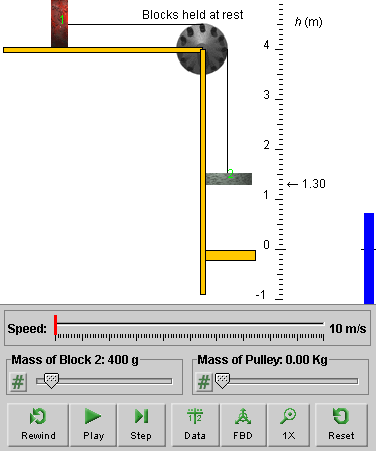
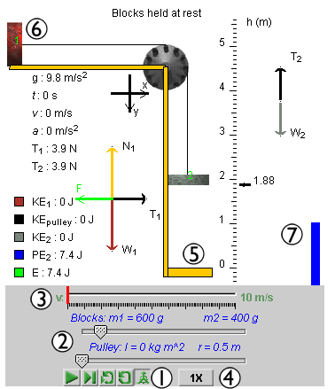

This lesson will give insight into the physics concepts of force, especially tension, free-body diagrams, and Newton's second law of motion. The system studied involves objects moving with constant accelerations, and the lesson will review concepts related to motion with constant acceleration.
The applet should be open. The step-by-step instructions in this lesson are to be carried out in the applet. You may need to toggle back and forth between instructions and applet if your screen space is limited. You should be prepared to do calculations to verify the numbers that are generated by the applet.
Exercise 1. Reset the applet.
The lower edge of Block 2 will be at elevation h = 1.30 m, and the upper edge of the yellow platform at h = 0, as in Figure 1 below.
The masses of Blocks 1 and 2 will be m1 = 600 g and m2 = 400 g, respectively, and the pulley's mass will be 0. These mass values will be assumed in all of the following, except where otherwise noted. (m1 is fixed at 600 g in the applet, but m2 could be changed, as could the pulley mass.)

Figure 1
Click on Block 1, and drag it until Block 2 is at elevation h = 3.00 m.
If your window size is small, you may have to drag Block 1 beyond the left edge of the window. As long as you don't release the mouse button while doing this, you can keep on dragging the block. Alternatively, you can resize the window by dragging its lower right-hand corner.
Click PLAY. Observe the speedometer during the motion.
Qualitatively, describe how the speedometer needle moves during the motion. What does the rate at which the speed changes during the motion suggest about the acceleration of the blocks?
Exercise 2. REWIND the applet, display the Data box, and STEP through the motion until Block 2 reaches h = 0. Note down the values of the speed and the time at a number of instants. E.g., at t = 0.20 s, v = 0.8 m/s.
Make a table of the data and a graph of v vs. t. The graph should yield a straight line, within experimental uncertainties, if the acceleration is constant. From the graph, obtain an equation that describes v as a function of t.
Does the graph suggest that the acceleration is constant? If so, obtain a value for this acceleration.
Note. An Appendix at the end of this Lesson lists standard kinematical equations for motions with constant acceleration. The directions of the x and y axes in the applet are chosen to coincide with the directions of motion and the directions of the accelerations of the blocks. Therefore the blocks' velocities and accelerations will all be positive (or zero) and therefore numerically equal to the corresponding speeds and magnitudes of acceleration. E.g., for Block 1 which is moving in the x-direction,
vx = v and ax = a.
This means that we can use the abbreviated notations v and a in equations that normally would require the components vx and va.
Question 1: Why would one expect the accelerations of the blocks in Fletcher's Trolley to be constant?
Answer: The force of gravity acting on Block 2, which drives the system, is constant. As a result, the force exerted by the string on Block 2 is constant also. Newton's second law of motion says that the net force acting on an object is proportional to the object's acceleration. Thus, if the forces acting on an object are constant, then the acceleration of the object is constant as well.
An engineer who wants to design a system so that it has a certain acceleration must be able to calculate the acceleration from the parameters defining the system. In the case of Fletcher's Trolley, these parameters are the masses of the two blocks and the magnitude g of the acceleration due to gravity. (The pulley is assumed here to have zero mass.)
Question 1: Given the masses m1 = 0.600 kg and m2 = 0.400 kg, and g = 9.8 m/s2, how can one calculate the magnitude a of the acceleration of the two blocks after Block 1 has been released?
Answer.
Note that for a massless and frictionless pulley and a massless string, the tension T in the string is the same on both sides of the pulley and everywhere along the sring and equal to the magnitudes T1 and T2 of the forces exerted by the string on blocks 1 and 2, respectively:
T = T1 = T2.
Make free-body diagrams for the two blocks, and compare them to the ones shown by the applet, as in Figure 2 below showing the system in motion.

Figure 2
Applying Newton's second law to the two blocks separately yields the following two equations, governing the motion of the system. The special mass values assumed initially are used in these equations.
Block 1 (x-direction): T = 0.6a (3)
Block 2 (y-direction): W2 - T = 0.4a. (4)
whereW2 = m2g = 0.40×9.8 = 3.92 N. (5)
You may want to verify that the values a = 3.92 m/s2 and T = 2.352 N satisfy these equations exactly. These values are consistent, to within significant figures, to the values a = 3.92 m/s2 and T = 2.4 N displayed by the applet.
W2 = 0.4g = 0.4×9.8 = 0.6a + 0.4a = 1.0a
whencea = 0.4x9.8 = 3.92 m/s2, (6)
This is the value displayed by the applet.
Exercise 1. Change the value of the mass of Block 2 to 800 g, and work out the acceleration of the blocks. Keep the pulley mass equal to 0. The mass of Block 1 is fixed at 600 g.
The tension is not measured as easily as the acceleration. One would have to insert a strain gauge into the string, which would not be massless and would have an effect on the conditions in the system including the tension. Thus, it is particularly important that one knows how to calculate the tension. E.g., an engineer who has to design a system like Fletcher's Trolley will want to know how strong to make the string so that it will not break under the tension that it has to sustain.
Question 1: How can one calculate the tension in the string when the blocks are moving?
Answer. If one already has a value for the acceleration, the easiest way to find the tension is to substitute value (6) for a into Eq.(3). This immediately gives the value
T = 0.600x3.92 = 2.352 N . (7)
The applet displays a value of 2.4 N, which is consistent with this within significant figures.
You should verify that Eq.(4) too is satisfied by the pair of values (6) and (7).
Note that the tension value of 2.352 N is less than the weight of Block 2. The latter is equal to 3.92 N, according to Eq.(5).
Exercise 1. Work out the value of the tension while the blocks are moving if the mass of Block 1 is 800 g. Use the value of the acceleration obtained earlier.
In the equations in the table below, it is assumed that an object is moving along an x-axis with constant acceleration ax. For a motion along a y-axis with constant acceleration, the equations are analogous. You would only replace the subscript x by y.
Notation. Both the velocity, vx, and the acceleration, ax, will be written here with the subscript x. Quantities that carry the subscript x can be either positive or negative. The subscript notation distinguishes these quantities from others that can take on only positive values (or zero), like the speed, v, and the magnitude a of the acceleration. Quantities without subscript are equal to the absolute values of the corresponding quantities with subscript:
v = |vx| and a = |ax|.
The notation vx(t) indicates the value of the velocity vx at time t. Similarly, x(t) indicates the value of the position x at time t.
Acceleration, Velocity, and Position vs. Time:
| Acceleration | ax = const | (A1) |
| Velocity | vx(t) = vx(0) + axt | (A2) |
| Position | x(t) = x(0) + vx(0)t + (ax/2)t2 | (A3) |
Speed vs. Displacement:
Δv2 = v2(t) - v2(0) = 2axΔx = 2ax[x(t) - x(0)] . (A4)